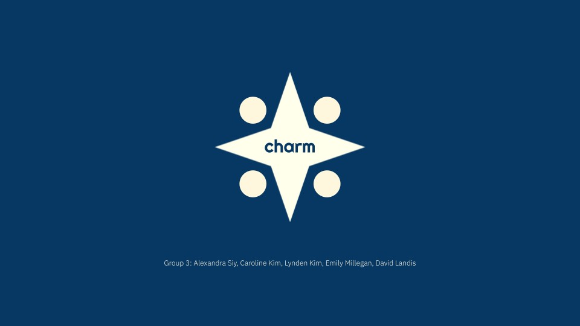
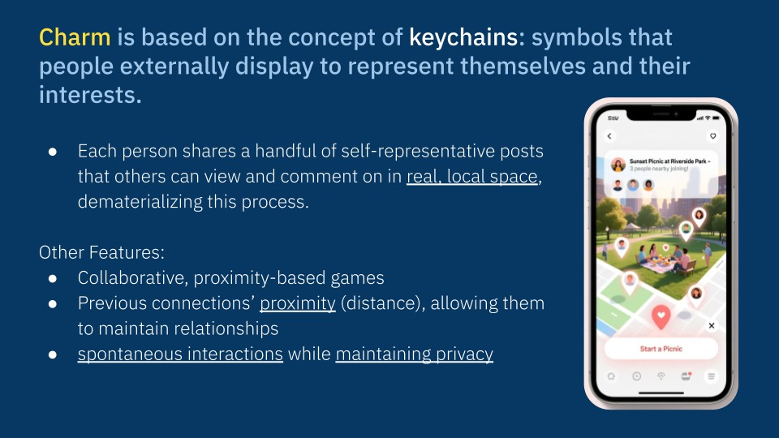
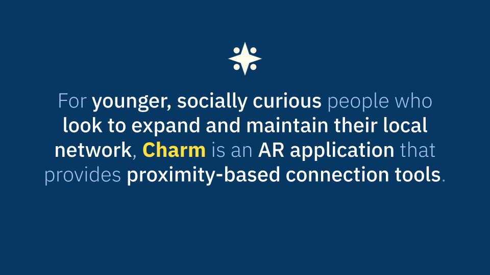
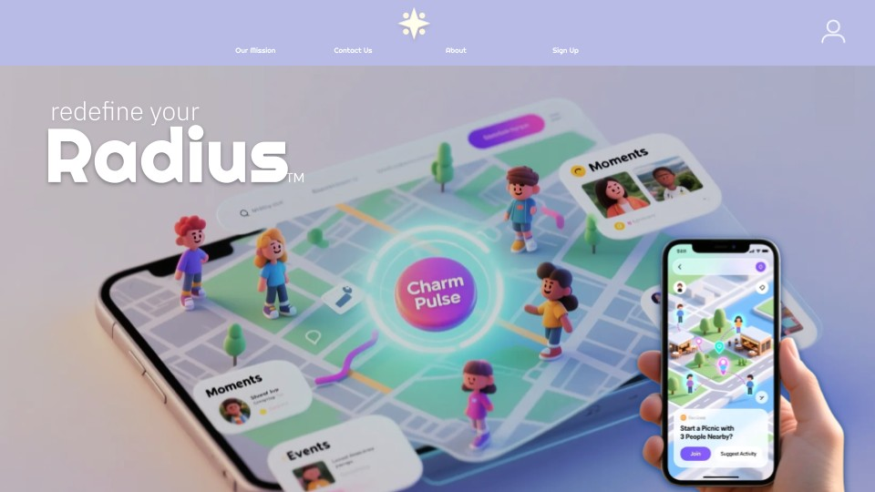
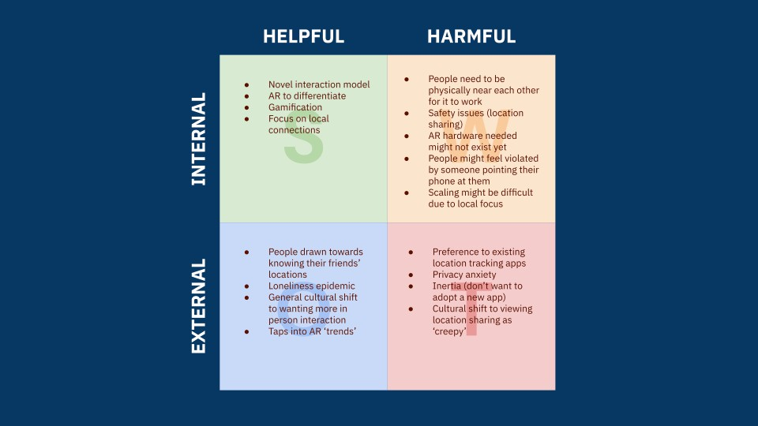
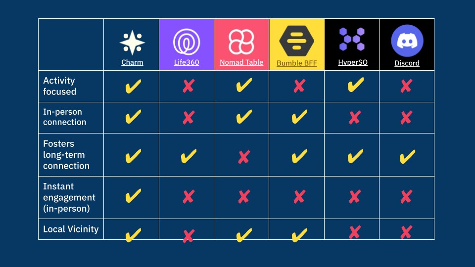
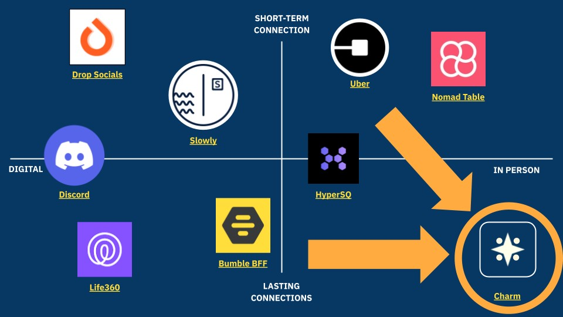
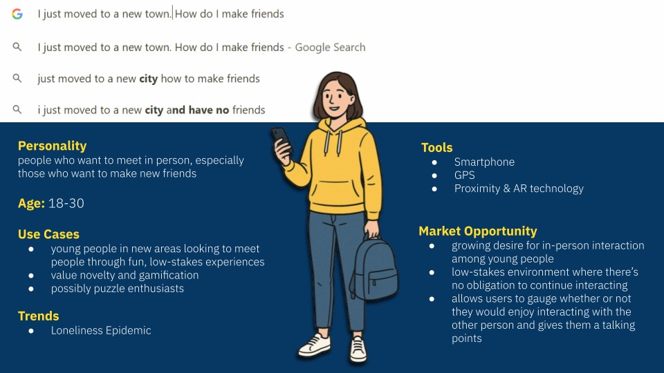
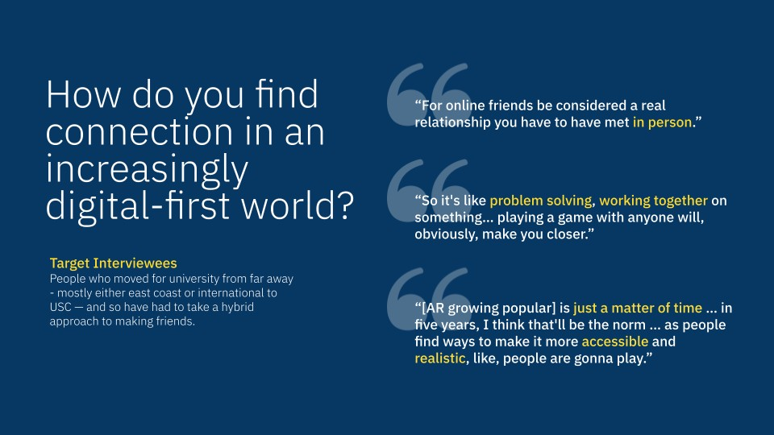
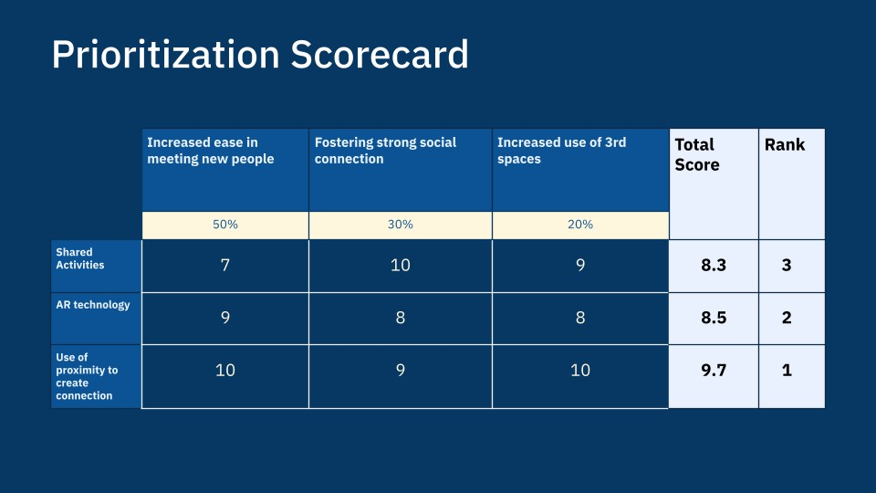

AR / Product concept
Charm.
Connections beyond the screen.
Charm replaces endless scrolling feeds with location-aware "post-keychains" that only appear when you're physically near someone.
The concept is that each person curates a small set of posts into a "post-keychain". Eventually, these would appear in AR only when physically near someone. The goal is to give people a meaningful first impression exactly how they want it.
SECTION 01 / 13
A more personal kind of social network
Charm explores how augmented reality could turn nearby people and shared interests into opportunities for connection. The pitch introduces a social experience anchored in real places.

SECTION 02 / 13
The challenge: connection beyond a feed
The starting question is how a digital tool can encourage people to meet in person. This section frames the problem before introducing Charm’s approach.
SECTION 03 / 13
A keychain for your digital identity
The concept borrows from the way physical keychains express personality. A small collection of self-representative posts becomes a conversation starter that others can discover nearby.

SECTION 04 / 13
Who Charm is for
The audience is younger, socially curious people who want to expand and maintain a local network. Proximity-based tools connect the digital experience to the people and places around them.

SECTION 05 / 13
Making the idea tangible
The landing-page visual brings together a map, nearby activity, and personal posts. It gives the abstract idea of a local social network a recognizable interface.

SECTION 06 / 13
Balancing opportunity and risk
The SWOT analysis considers both the appeal of spontaneous connection and the challenges of location privacy, adoption, and scale. These are design constraints the concept would need to address.

SECTION 07 / 13
Comparing the alternatives
The feature comparison looks at activity, local proximity, instant engagement, and longer-term relationships. It helps explain the combination Charm is trying to offer.

SECTION 08 / 13
Finding a position in the market
The positioning map compares digital and in-person experiences with short-term and lasting connections. Charm’s proposed space combines meeting locally with maintaining a relationship over time.

SECTION 09 / 13
Designing around a new arrival
The persona focuses on someone navigating an unfamiliar city and looking for friends. That scenario makes low-pressure introductions and shared local experiences especially relevant.

SECTION 10 / 13
Listening for what makes connection last
The interview material explores how people build trust and move from online contact to a real relationship. Shared activities and meeting in person inform the direction of the concept.

SECTION 11 / 13
Choosing what matters most
The scorecard compares possible features against social connection, ease of meeting people, and use of shared spaces. Proximity-based connection is the strongest priority in this exercise.

SECTION 12 / 13
Planning the next stage
The funding slide translates the idea into a proposed development ask. It is a planning scenario for the concept rather than evidence of funding received.
SECTION 13 / 13
Bringing the story together
Charm’s central idea is to use technology as a bridge into local connection. The closing slide returns to that identity and leaves room to discuss privacy, prototyping, and testing.